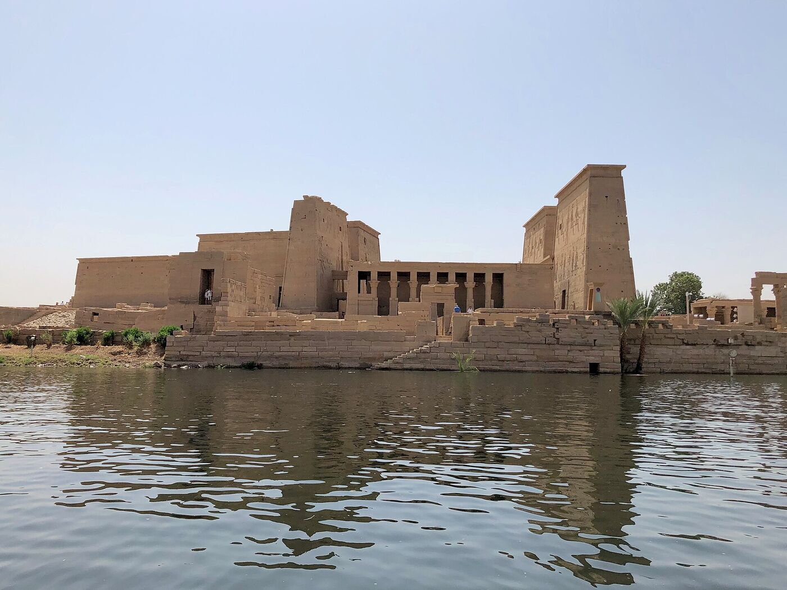
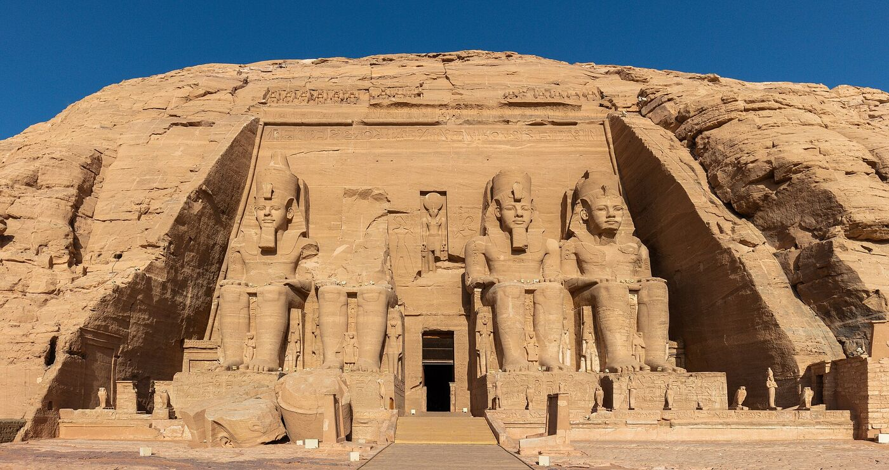

معبد فيله
معبد مخصص للإلهة إيزيس. بعد بناء السد العالي نقلت مبانيه إلى جزيرة أجيلكيا ضمن حملة دولية بإشراف اليونسكو.
جنوب مصر على النيل، وبها معابد نقلت من أماكنها لتبقى بعد بناء السد العالي.

معبد مخصص للإلهة إيزيس. بعد بناء السد العالي نقلت مبانيه إلى جزيرة أجيلكيا ضمن حملة دولية بإشراف اليونسكو.

معبدان منحوتان في الصخر أقامهما رمسيس الثاني. نقلا أيضا إلى موقع أعلى في ستينيات القرن الماضي حتى لا تغمرهما مياه بحيرة ناصر.